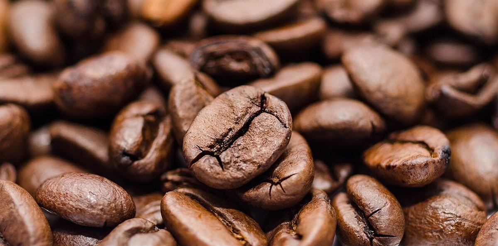

LAP 04 / 口コミ
こんな声があるかもしれない
カフェという業種から自然に想像できる声を、制作側が創作したものです。
以下は制作側が考えた創作のイメージ例で、制作側の創作であり、実在のお客様の投稿ではありません。実際の口コミとは関係ありません。
営業時間などが分かったら、行ってみたいです。それまでは、Instagramの更新を楽しみにしています。
いつか行ける日が来たらうれしいです。まずはInstagramをのぞいてみたいと思います。
お店のことがもう少し分かったら、あらためてゆっくり見てみたいです。その日を気長に待ちたいと思います。
